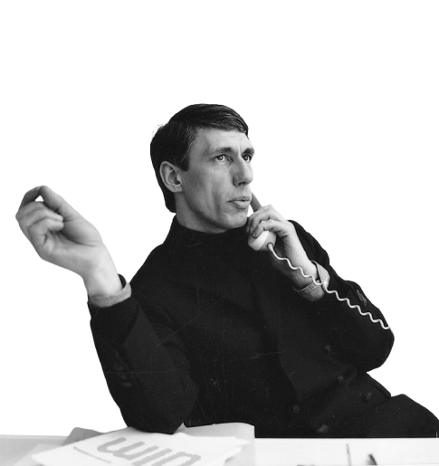

Alfabet
Cijfers
abcdefghijklmnopqrstuvwxyz
123456789
Verhaal achter de letter: New Alphabet
Het lettertype New Alphabet is ontworpen in 1967 door grafisch ontwerper Wim Crouwel. Wim Crouwel zag al dat de opkomst van digitale technologie een impact zou hebben op de manier waarop letters werden weergegeven. Hij ontwierp het New Alphabet, een lettertype zonder kromme lijnen, dat zowel horizontaal als verticaal uitgelijnd kon worden. Het was een experimenteel ontwerp, bedoeld voor weergave op schermen, en maakte Crouwel in één klap beroemd. Het lettertype werd zelfs gebruikt door de band Joy Division voor hun album Substance in 1988, en staat het nog steeds voor vooruitgang.
Wim Crouwel
Wim Crouwel
Wim Crouwel
Wim Crouwel
Wim Crouwel
Wim Crouwel
Wim Crouwel
Wim Crouwel
Wim Crouwel
Wim Crouwel
Wim Crouwel
In al zijn werk is dit terug te zien, zoals in zijn ontwerp voor dit lettertype New Alphabet of voor het telefoonboek en de postzegels die hij voor (destijds) de PTT ontwierp. Zijn werkwijze bleef gedurende zijn carrière hetzelfde, doordat hij gehecht geraakt was aan zijn vaste stramien. Alle letters in zijn typografie moesten even groot zijn en evenredig van elkaar staan. Zijn ontwerpen begonnen dan ook altijd met een raster.
Hij is ook mede oprichter van een bekend ontwerp bureau: Total Design. Dit was een van de eerste grote ontwerpbureaus in Nederland, ze hebben ook baanbrekende ontwerpen gemaakt voor grote namen.
Interesse in typografie
Wim Crouwel was altijd geïnteresseerd door typografie en hield van ontwerpen die helder en functioneel waren. Voor hem moesten lettertypes vooral duidelijkheid en structuur bieden, zonder overbodige versieringen. In de jaren '60, toen computers en nieuwe druktechnieken opkwamen, begon hij te experimenteren met moderne lettertypes die geschikt waren voor deze nieuwe technologieën.
Hij maakte gebruik van die nieuwe technologieën zoals computers en rasterdruk methodes. Dit inspireerde hem om te experimenteren met het ontwerpen van lettertypes die geschikt waren voor deze nieuwe technische mogelijkheden. Een van zijn bekendste en meest baanbrekende creaties op dit gebied is dan ook het New Alphabet-lettertype, waar deze website over gaat. Het is een heel erg strak lettertype dat was ontworpen om goed leesbaar te zijn op cathodestraalbuisbeeldschermen.

Het lettertype dat je nu aan het lezen bent heet Gridnik.
Dit is een lettertype ontworpen door Wim Crouwel, bedoelt als een beter leesbare
versie op het New Alphabet lettertype.